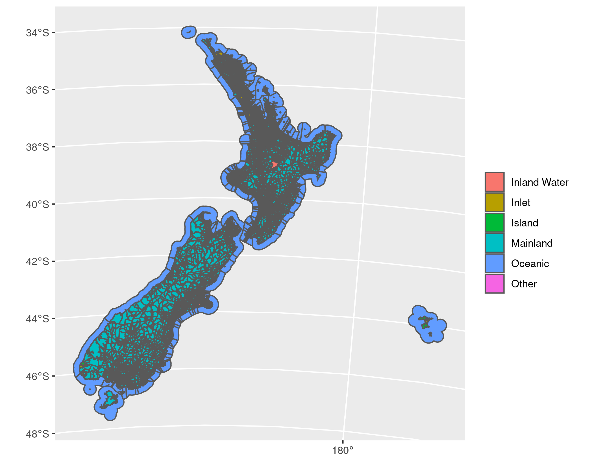
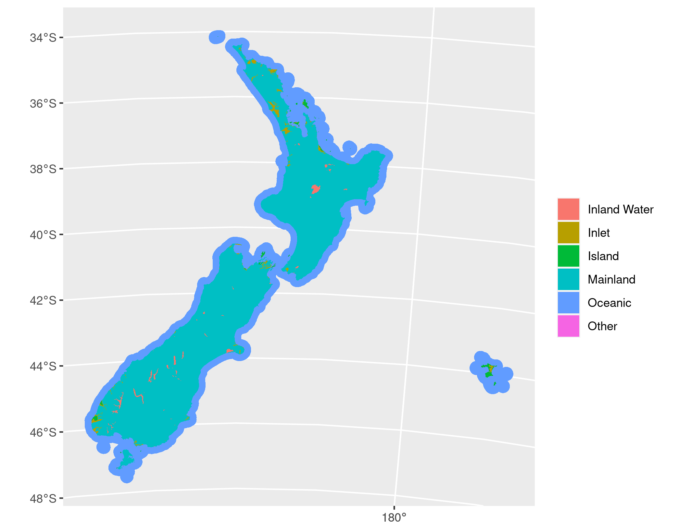
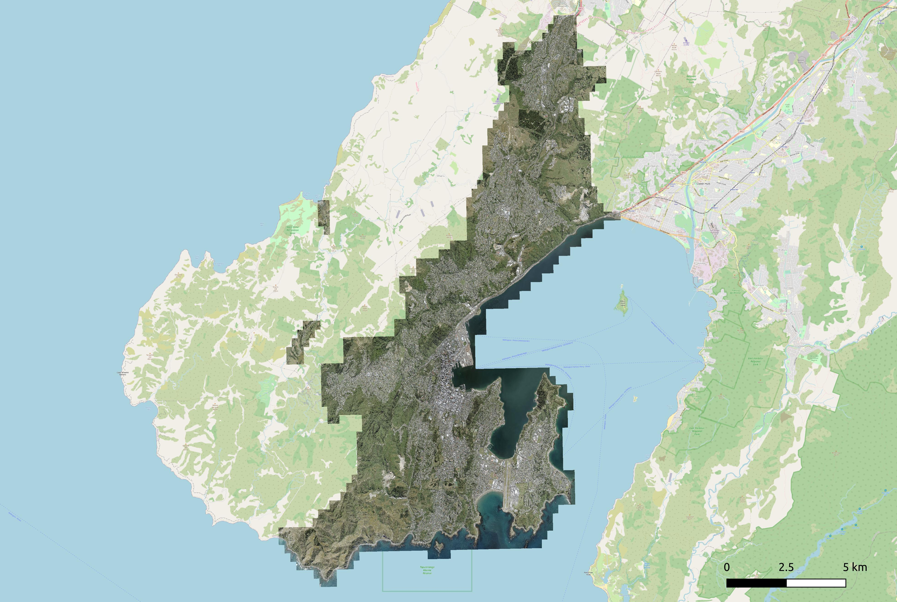
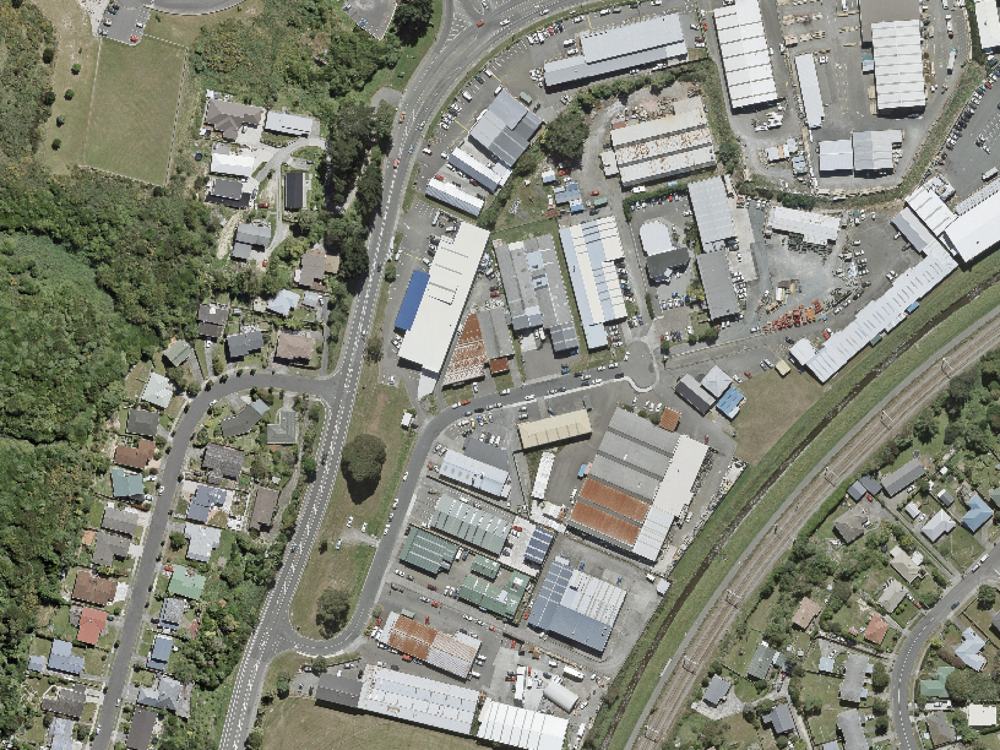
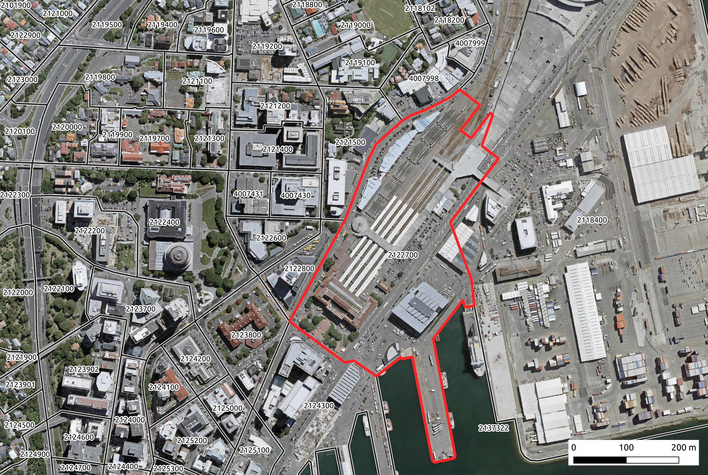
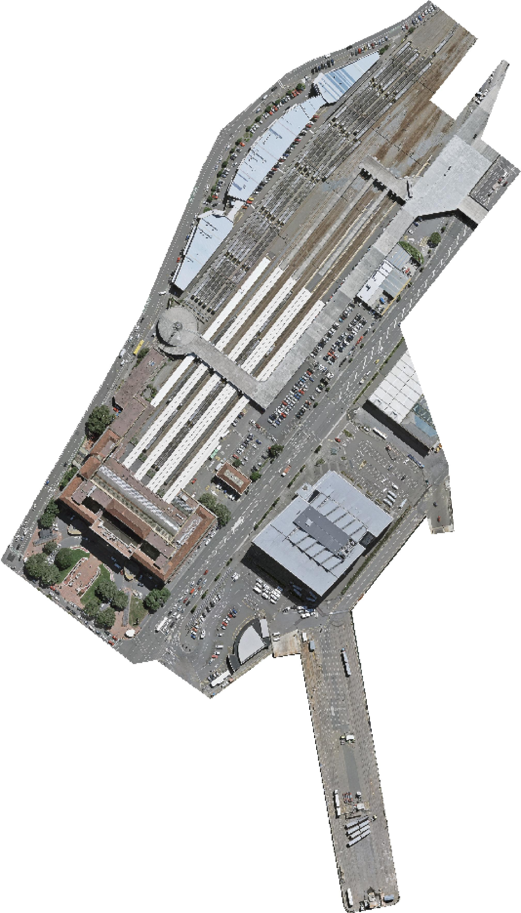
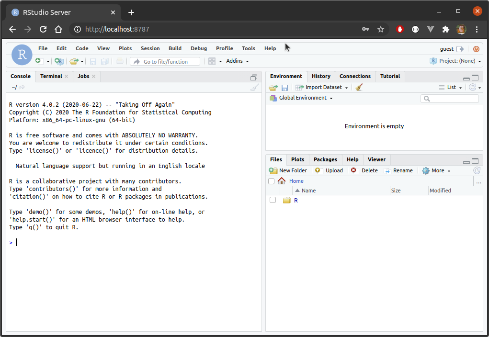

Overview
R is a wildly extensible tool, and that extensibility means it can be used in a surprising array of domains. This versatility is great, but there are times when R is just not the best tool for the job–at least not by itself. Geospatial applications are a good example. Packages such as rgdal, sf, and raster make R quite usable in this domain, but R’s largely in-memory approach can make geoprocessing tasks involving large spatial objects a little challenging. In this blog, we look at how we can leverage PostgreSQL and the PostGIS extension to usefully complement R, mostly by offloading large geoprocessing tasks, and as a library for storing large feature classes for shared use across a potentially large userbase.
Source Data
In this demonstration we will use OpenStreetMap data sourced from Geofabrik. Specifically, New Zealand (.shp.zip). Unpacked, this provides a number of feature classes, but we will be interested mainly in gis_osm_landuse_a_free_1, which contains polygons describing land use–forest, farm, nature reserves, etc. This data is provided as a set of ESRI Shapefiles.
Additionally, we will use Meshblock 2020 (generalised) sourced from Stats NZ Geographic Data Service. This is a standard geographic grouping used by Stats NZ out of which all other higher geographies (Statistical Area levels 1 and 2, Territorial Authority, Regional Council, etc.) are created. This data can be downloaded in a range of formats, and GeoPackage was chosen for the purpose of this post.
Finally we will make use of Wellington 0.10m Urban Aerial Photos (2017) from the LINZ Data Service. This is a set of high resolution aerial imagery covering Wellington City. This data can be downloaded in a range of formats, and JPEG was chosen here.
Loading the Source Data to PostGIS
In principle, we can create spatial tables in a PostGIS-enabled database by running SQL queries. Of course, that’s not practical beyond trivially simple use cases. In practice, we will copy compatible files into the database using one of the following methods:
- using command-line tools that come with PostGIS, such as
shp2pgsql - using command-line tools that come with GDAL, such as
ogr2ogr - using a client library, such as the
rpostgisorrgdalpackages in R
Vector data
We can load vector data to PostGIS using the ogr2ogr program provided by gdal. For example, in the following we load a GeoPackage called meshblock-2020-generalised.gpkg to statsnz.meshblock2020:
ogr2ogr \
-f PostgreSQL PG:"dbname='gis' user='gisuser' password='gisuser'" \
meshblock-2020-generalised.gpkg \
-nln statsnz.meshblock2020In this case the geodatabase has a single layer, so we don’t need to specify it explicitly. And note that on occasion it might be necessary to specify the type explicitly, for example by adding -nlt MULTIPOLYGON.
We can also load vector data using the shp2pgsql utility that is provided with PostGIS. It only works for shapefiles, however. So, to load the data this way we’d first convert it to a shapefile as follows:
ogr2ogr \
-f 'ESRI Shapefile' mb2020.shp \
meshblock-2020-generalised.gpkgand then use shp2pgsql to load it to a PostGIS table:
shp2pgsql -s 2193 mb2020.shp statsnz.meshblock2020 | psql -d gisNote that shp2pgsql actually just creates a large SQL script, and that is executed in the same way as any other. ogr2ogr can also be used to create a SQL script which can be loaded directly to our database:
ogr2ogr -f PGDUMP mb2020.sql \
meshblock-2020-generalised.gpkg \
-nln statsnz.meshblock2020Actually, this approach should be preferred since transferring to shapefile as an intermediate step will cause attribute names to be truncated / normalised, and if the GeoPackage contains indexes, comments, and so forth, they will be retained.
Finally, one could load the data via R itself, though it probably isn’t the best approach in general. Still, to load the same GeoPackage:
library(sf)
conn <- RPostgreSQL::dbConnect(
"PostgreSQL", host = "localhost", port = 5432,
dbname = "gis", user = "gisuser", password = "gisuser"
)
mb <- st_read("meshblock-2020-generalised.gpkg")
st_write(mb, conn, c("statsnz", "meshblock2020"))
DBI::dbDisconnect(conn)Raster data
GDAL only offers read-only support for PostGIS currently (I think), so there are two options for loading rasters: using the raster2pgsql command-line tool provided by PostGIS, or using the rpostgis::pgWriteRast function in R.
One advantage of the raster2pgsql approach is that we can wildcard a large number of input files. For example, for this blog, the Wellington aerial imagery was downloaded as an archive containing 1667 jpeg files. These can be loaded as linz.wellington-010m-urban-aerial-2017 as follows:
raster2pgsql \
-I -C -e -Y -F -s 2193 -t 100x100 -l 2,4 \
*.jpg linz.wellington_010m_2017 | psql -U gisuser -d gisThere are some interesting options here. Using -e means each file will be run as an independent query, rather than all running as a single transaction. Using -l 2,4 means that lower resolution (1/2 and 1/4) versions of the raster will be added to new tables called o_2_wellington_010m_2017 and o_4_wellington_010m_2017, respectively. See Raster Data Management, Queries, and Applications.
Loading the data via R is possible, though not as straightforward. In this case, while not recommended, we could do something like:
library(rpostgis)
conn <- RPostgreSQL::dbConnect(
"PostgreSQL", host = "localhost", port = 5432,
dbname = "gis", user = "gisuser", password = "gisuser"
)
files <- dir("/home/cmhh/Downloads/shp/linz", full.names = TRUE)
files <- files[grepl("*.jpg$", files)]
l <- lapply(files, function(f) {
pgWriteRast(
conn,
c("linz", "wellington_010m_2017"),
stack(f),
append = TRUE
)
})
DBI::dbDisconnect(conn)Practical Examples
In this section we demonstrate a small number of practical use cases that are probably relatively common in many workflows. We will start with a pure R approach in each case (if possible), before contrasting it with an equivalent approach which leverages PostGIS.
Note that all operations in this section were conducted on a single machine with 16GB of RAM and a Intel® Core™ i7-9750H CPU @ 2.60GHz × 12 processor.
Transforming / reprojecting and simplifying features
Consider the osm.gis_osm_landuse_a_free_1 feature class. This is reasonably large, consisting of some 373272 features, and totalling 327MB as a shapefile on disk. The features themselves are polygons that describe various types of land use, a section of which looks as follows:

Assume we wish to do the following:
- read the shapefile
- convert to EPSG 2193 (New Zealand Tranverse Mercator 2000)
- simplify with 1 metre tolerance.
To do this in R, we might do the following:
library(sf)
landuse_nztm_1m <-
st_read("gis_osm_landuse_a_free_1.shp") %>%
st_transform(2193) %>%
st_simplify(preserveTopology = TRUE, dTolerance = 1)Peak memory use during this operation was approximately 2.5GB, and the operation took 63 seconds. This same task can be conducted from R, but leaning heavily on PostGIS, by pulling the results of a SQL query as follows:
conn <- RPostgreSQL::dbConnect(
"PostgreSQL", host = "localhost", port = 5432,
dbname = "gis", user = "gisuser", password = "gisuser"
)
landuse_nztm <- st_read(
conn,
query = "
SELECT
gid, osm_id, code, fclass, name,
ST_Simplify(ST_Transform(wkb_geometry, 2193), 1.0, FALSE) as geom
FROM
osm.gis_osm_landuse_a_free_1
"
)Peak memory usage throughout was 1.5GB, and the total execution time was 19.4 seconds. In this case, then, PostGIS consumed 1GB (40%) less memory, and was 43.6 seconds (69%) faster than an in-memory approach using the sf package.
Dissolving features
A feature class can be dissolved by some categorical attribute using the sf package simply by performing a grouped aggregate, in this case with dplyr:
library(dplyr)
mb_dissolved_sf <-
st_read("meshblock-2020-generalised.gpkg") %>%
group_by(LANDWATER_NAME) %>%
summarise(n = n())Peak memory use for this was about 530MB, and total execution time was 65.1 seconds.
mb_dissolved <- st_read(
conn,
query = "
SELECT
landwater_name, ST_Multi(ST_Union(geom)) as geom
FROM
statsnz.meshblock2020
GROUP BY
landwater_name
"
)Peak memory use for this was about 480MB, and total execution time was 67.9 seconds. Importantly, peak memory usage for R itself was much smaller at 132.3MB.
The result either way can be plotted using the geom_sf geometry for ggplot2. Before dissolving we have:
library(ggplot2)
ggplot() +
geom_sf(
data = st_read("meshblock-2020-generalised.gpkg"),
aes(fill = LANDWATER_NAME)
) +
guides(fill = guide_legend(title = ""))
After dissolving we have:
ggplot() +
geom_sf(
data = mb_dissolved_sf,
aes(fill = LANDWATER_NAME), linetype = "blank"
) +
guides(fill = guide_legend(title = ""))
Clipping a large raster
The Wellington 0.10m Urban Aerial Photos (2017) raster was downloaded in JPEG format. Unpacked, the ‘raster’ is 5.4GB, and is made up of 1667 individual JPEG files, each about 3.5MB in size. Collectively, they look as follows:

In principle, these can be imported into R using the raster package. For example, to create a raster from the first 2 JPEG files:
f <- dir("/home/cmhh/Downloads/shp/linz", full.names = TRUE)
f <- f[grepl("^.+(.jpg)$", f)]
r <- merge(brick(f[1]), brick(f[2]))which yields:

In practice, however, this approach is excruciatingly slow, and far from practical. (Loading the raster to PostGIS is also excruciatingly slow, but it only needs to be done once, and then many users can use the result.) Now consider this same raster with the statsnz.meshblock2020 feature class overlaid:

Assume that we just wish to use a single meshblock, 2122700, to mask the raster. This can be done in R using the gdalUtils::gdalwarp function (which is just a wrapper for the gdalwarp command-line tool) as follows:
library(gdalUtils)
gdalwarp(
srcfile = "
PG: dbname='gis' host=127.0.0.1 port=5432
user='gisuser' password='gisuser' mode=2
schema='linz' column='rast'
table='wellington_010m_2017'
",
dstfile = "2122700.tif",
s_src = "EPSG:2193",
t_srs = "EPSG:2193",
multi = TRUE,
cutline = "
PG:dbname='gis' host=127.0.0.1 port=5432
user='gisuser' password='gisuser'
",
csql = "
select geom
from statsnz.meshblock2020
where mb2020_v1_00 = '2122700'
",
crop_to_cutline = TRUE,
dstnodata = "nodata"
)Note that this took only a few seconds in practice, and outputs a single TIF file which can be read into R using raster::stack("2122700.tif"), and looks as follows:

Extensions
PostGIS has a number of other uses. One interesting use case is to pair it with GeoServer so feature classes can be served as WMS features which can be included in Leaflet maps. For an example of using GeoServer from R to create tile services on the fly, see Building Tile Services on-the-fly with GeoServer.
Note that GeoServer supports the use of rasters, though it is a little involved. See, for example, GeoServer User Manual - ImageMosaic.
Another method of using PostGIS to serve features is via pg_tileserv or pg_featureserv. The first is used to serve PostGIS feature tables as tiles, the second will serve PostGIS feature tables in a range of OGC API formats. All of this might make for an interesting follow-up post in the future.
Appendix - Installing Dependencies
For this demonstration, one can deploy all required software via Docker containers. This ensures it is very easy to reproduce everything shown here if desired.
Installing Docker
Docker is relatively easy to install on Linux systems. Reasonably new versions will sometimes be available from standard repositories, but a newer version can be obtained for most distributions by following the instructions:
While Windows users can run Linux containers via Docker Desktop, they are strongly encouraged to enable the Windows Subsystem for Linux version 2 (WSL2), and instead install Docker on Linux. For a rundown on using Docker via WSL2 see:
Docker on Windows with Windows Subsystem for Linux 2
I have no experience with Docker on a Mac, but Docker Desktop is available. It has apparently had performance issues in the past, though newer versions might be much better. The release notes for version 2.3.5.0 (2020-08-21) have the following promising inclusion:
Docker Desktop now uses gRPC-FUSE for file sharing by default. This has much faster file sharing and uses much less CPU than osxfs, especially when there are lots of file events on the host. To switch back to osxfs, go to Preferences > General and disable gRPC-FUSE.
‘Installing’ PostgreSQL and PostGIS
There are Docker images available which contain both PostgreSQL and PostGIS, though it is instructive to create one. First, create a file called Dockerfile with the following content:
FROM ubuntu:20.04
ENV DEBIAN_FRONTEND=noninteractive
ENV SHELL=/bin/bash
RUN apt-get update && apt-get -y dist-upgrade && \
apt-get install -y --no-install-recommends \
wget gnupg2 ca-certificates gdal-bin sudo vim && \
sh -c 'echo "deb http://apt.postgresql.org/pub/repos/apt focal-pgdg main" > /etc/apt/sources.list.d/pgdg.list' && \
wget --quiet -O - https://www.postgresql.org/media/keys/ACCC4CF8.asc | sudo apt-key add - && \
apt-get update && apt-get install -y --no-install-recommends postgresql-13 postgresql-13-postgis-3 postgis && \
apt-get clean && \
rm -rf /var/lib/apt/lists/*
RUN service postgresql start && \
sudo -u postgres psql -c 'create database gis;' && \
sudo -u postgres psql -d gis -c 'create extension postgis;' && \
sudo -u postgres psql -d gis -c 'create extension postgis_raster;' && \
sudo -u postgres psql -d gis -c 'create extension postgis_sfcgal;' && \
sudo -u postgres psql -d gis -c 'create extension postgis_topology;' && \
sudo -u postgres psql -d gis -c "SET postgis.gdal_enabled_drivers = 'ENABLE_ALL';" && \
sudo -u postgres psql -c 'create user gisuser;' && \
sudo -u postgres psql -c "alter user gisuser with encrypted password 'gisuser';" && \
sudo -u postgres psql -c 'grant all privileges on database gis to gisuser;' && \
printf "\tlisten_addresses='*'\t" >> /etc/postgresql/13/main/postgresql.conf && \
sed -i -E '/local +all +all +peer/ s/peer/md5/' /etc/postgresql/13/main/pg_hba.conf && \
sed -i -E '/host +all +all +127.0.0.1\/32 +md5/ s/127.0.0.1\/32/0.0.0.0\/0 /' /etc/postgresql/13/main/pg_hba.conf && \
sed -i -E '/host +all +all +::1\/128 +md5/ s/::1\/128/::0\/0 /' /etc/postgresql/13/main/pg_hba.conf &&\
printf "localhost:5432:gis:gisuser:gisuser" >> /root/.pgpass && \
chmod 0600 /root/.pgpass
EXPOSE 5432
CMD service postgresql start && \
tail -f /dev/null To build the image, change into the directory containing Dockerfile and run:
docker build -t postgis .If we wish to persist our database, we can create a volume as so:
docker volume create pgdataThen, to run an instance with the volume mounted, as well as a folder containing all the required source features (if desired):
docker run \
-d --rm --name postgis \
-p 5432:5432 \
-v /path/to/downloaded/data:/data \
-v pgdata:/var/lib/postgresql/13/main \
postgisTo gain terminal access to the running container, run:
docker exec -it postgis bash‘Installing’ R and required spatial dependencies
To create a Linux container with R and RStudio Server, create a file called Dockerfile with content as follows:
FROM ubuntu:20.04
ARG rstudio_version=1.3.1093
ENV DEBIAN_FRONTEND=noninteractive
ENV SHELL=/bin/bash
ENV RSTUDIO_VERSION=$rstudio_version
# install necessary packages
RUN apt-get update && apt-get -y dist-upgrade && \
apt-get install -y --no-install-recommends \
gnupg2 ca-certificates gdebi-core wget odbc-postgresql libblas3 \
grass gdal-bin libgdal-dev libgeos-dev libproj-dev proj-bin proj-data && \
sed -i -e 's/# en_US.UTF-8 UTF-8/en_US.UTF-8 UTF-8/' /etc/locale.gen && \
dpkg-reconfigure --frontend=noninteractive locales && \
update-locale LANG=en_US.UTF-8 && \
wget -qO- "https://yihui.org/gh/tinytex/tools/install-unx.sh" | sh -s - --admin --no-path && \
mv /root/.TinyTeX /usr/local/TinyTex && \
/usr/local/TinyTex/bin/*/tlmgr path add && \
apt-key adv --keyserver keyserver.ubuntu.com --recv-keys E298A3A825C0D65DFD57CBB651716619E084DAB9 && \
printf "deb https://cloud.r-project.org/bin/linux/ubuntu focal-cran40/" >> /etc/apt/sources.list && \
apt-get update && apt-get install -y --no-install-recommends r-base && \
wget https://download2.rstudio.org/server/bionic/amd64/rstudio-server-${RSTUDIO_VERSION}-amd64.deb && \
gdebi rstudio-server-${RSTUDIO_VERSION}-amd64.deb && \
rm rstudio-server-${RSTUDIO_VERSION}-amd64.deb && \
apt-get clean && \
rm -rf /var/lib/apt/lists/* && \
R -e "install.packages(c('renv', 'rgdal', 'rgeos', 'sf', 'leaflet', 'RPostgreSQL', 'rpostgis'))" && \
wget https://download2.rstudio.org/server/bionic/amd64/rstudio-server-${RSTUDIO_VERSION}-amd64.deb && \
gdebi --non-interactive rstudio-server-${RSTUDIO_VERSION}-amd64.deb && \
rm rstudio-server-${RSTUDIO_VERSION}-amd64.deb
# add user for demo purposes
RUN adduser --disabled-password --gecos "" guest && \
usermod --password $(openssl passwd -1 guest) guest && \
usermod -aG sudo guest
EXPOSE 8787
CMD service rstudio-server start && \
tail -f /dev/nullTo build this container, simply change into the directory containing Dockerfile and run:
docker build -t rstudio .The image can be started by running:
docker run -d --rm --name rstudio -p 8787:8787 rstudioWhen done, RStudio will be available via a web browser at http://localhost:8787.
